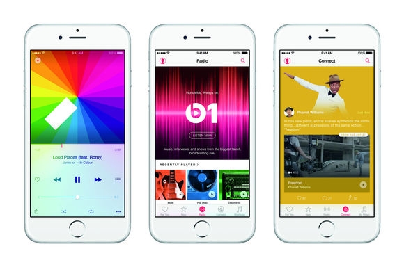
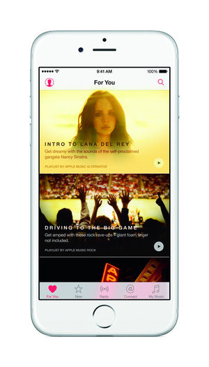
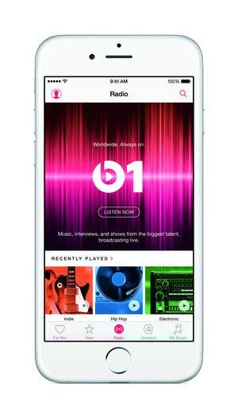
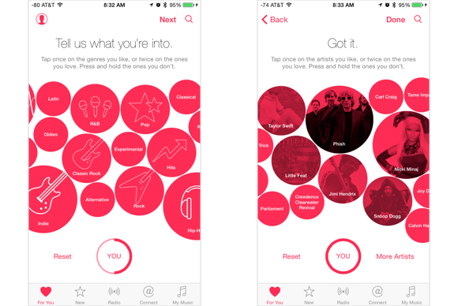
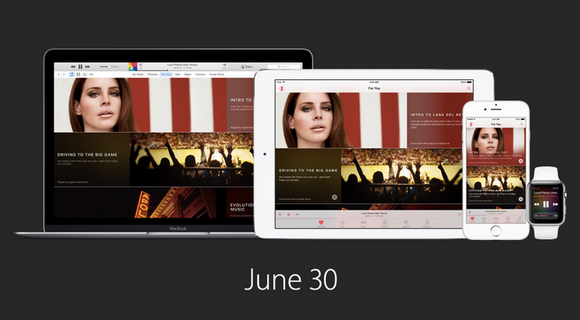
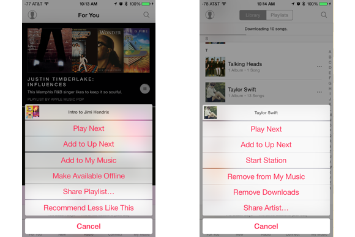
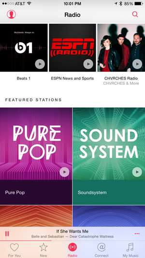
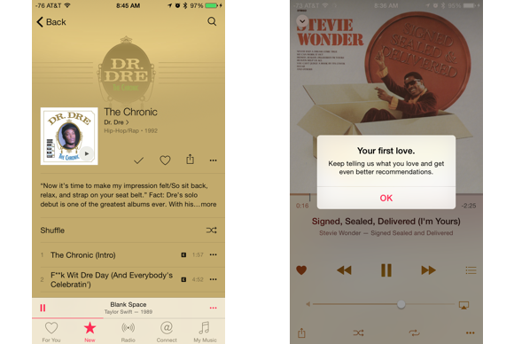

Apple Music FAQ: The ins and outs of Apple's new streaming music service
What kind of playlists can I create? Will Apple Music replace iTunes? What will happen to my Beats subscription? We have the answers, and more.

Apple singlehandedly turned the digital music marketplace on its head when it launched the iTunes Store in 2003, and now it’s going after the current hottest trend: Streaming media. Apple introduced this new service, Apple Music , during its annual Worldwide Developer’s Conference earlier this year, bringing out the company’s big guns (record exec and Beats cofounder Jimmy Iovine, Apple’s senior vice president of Internet Software Eddy Cue, and hip hop star Drake) to show the world how Apple Music plans to compete with the likes of Spotify, Rdio, and Tidal.
So, will this replace iTunes? Can you listen to music offline? What about existing Beats subscriptions? We’ve got the answers to those questions and more in this guide to everything Apple Music. If you have any additional questions, let us know in the comments below and we’ll see what we can dig up.
Still antsy for more? Check out our first impressions of Apple Music .
Getting started

What the heck is this thing? Apple Music combines subscription-based music streaming with global radio-like programming and a social feature that connects artists to fans. It’s bundled within iOS 8.4 and iTunes 12.2 (and all versions of iOS and OS X going forward). The service will come pre-installed on all iOS and OS X devices, but users will be able to stream music instead of purchase music. It’s an all-you-can-eat service for subscribers: Pay a flat fee, and you unlock all of Apple Music’s extensive 30 million-song library. Apple Music is also the new home for your personal music collection on your iOS devices.
Isn’t that the same as iTunes? Not at all. iTunes is all about media ownership, functioning as both a virtual record store and an efficient digital library for music and other media (movies, TV shows, etc) that you own personally. The software comes pre-installed on all Apple devices, and is available as a free download for non-Apple PCs and mobile devices. iTunes doesn’t require a subscription fee to use it (unless you use iTunes Match—more on that in a moment), since every song, album, movie, or show was purchased individually—either from the iTunes Store, or imported or ripped from another source.
Apple Music is all about streaming. You pay a flat fee to unlock access to Apple Music’s entire catalogue, but you don’t actually own the music you listen to. The files don’t live individually on your devices; you’re instead just listening to tracks stored remotely, that are owned by Apple. If you subscribe to any other media streaming subscription service—be it a music-only service like Spotify, Beats Music, Tidal, or Rdio, a TV service like Hulu, or a movie/TV combo service like Netflix or HBO Now—Apple Music functions the same way.
So, iTunes is dead? Not exactly. You can access your entire iTunes library from within Apple Music—just tap the My Music tab—and iTunes will still be a standalone app and media store if you’d prefer to continue to buy music a la carte. However, if you’ve let purchasing music fall by the wayside, you may never have to open iTunes again if you sign up for an Apple Music subscription.

What makes Apple Music different from Spotify/Rdio/Tidal/every other music subscription service? Apple is putting a lot of emphasis on Apple Music’s three additional features: Beats 1, curated playlists, and Connect.
Beats 1 is its radio offering, which features an around-the-clock worldwide live broadcast from DJs based in Los Angeles, New York, and London. It promises to deliver a curated selection of songs, pop culture news, and interviews with artists.
Speaking of curation, Apple Music also offers up recommendations tailored to your tastes, looking at artists you like and serving up other artists and playlists for you to listen to. But instead of being built by algorithms, they are built by real people, according to Apple. You can find these in the “For You” section of the app—but first you’ll have to set it up by following the prompts to select genres and artists you like.
Connect is Apple Music’s artist-based social networking feature, which lets fans follow artists. Artists can share special content with fans through Connect—hip-hop artist Drake took the stage at WWDC to show off how he’d use Connect to post behind-the-scenes photos of his life, share snippets of new songs, and other content. Besides Drake, you’ll find Connect profiles for Pharrell Williams, FKA twigs, Chris Cornell, Bastille, Alabama Shakes, Pearl Jam, and more. Apple has also created genre-specific profiles to follow. Apple automatically has you follow artists when you add their songs to your music library, but you can opt out of this (and find other artists to follow) in your account settings.
Besides that, Apple Music’s library has 30 million songs—the same number as Spotify, though the exact track listings vary. Oh, and you can also watch music videos without ads—something that no other streaming service currently offers.

Pick your favorite genres and artists to get the best recommendations possible.
How much does this cost? Apple Music costs $9.99 per month, or $14.99 per month for a family subscription for up to six people (which requires iCloud Family Sharing ).
Is there a free, ad-supported version? Sadly, no. Some aspects will be available to anyone who logs in with an Apple ID—namely, Beats 1, the ability to follow artists on Connect, and the ability to listen to Apple Music radio stations with a limited number of skips—but a paid subscription is required to access Apple Music’s entire library.
What devices can I use this on? Apple Music is available for all iPhones, iPads, and iPod touch models that are running iOS 8.4 or later. It’s also available on the Mac and PC via iTunes 12.2 or later. It will be coming to the Apple TV and Android phones this fall. It also pairs with the Apple Watch.
Wait, did you say Android? Yes! Android users will have access to Apple Music starting this fall. Music for all!

AppleWhen will it be available? Apple Music launched on June 30 on iOS, OS X, and PCs, and will expand to Apple TV and Android devices this fall. Apple offered a three-month free trial upon launch, which ends on September 30.
Does it work with AirPlay? Yes! Each song or music video has an AirPlay button next to it—just tap it and select the device you want to beam to.
Which countries have access to Apple Music? Apple Music is available in more than 100 countries worldwide, including the U.S., Canada, the U.K., Australia, Japan, Brazil, and India. Check out Apple’s complete list for more info.
Moving to Apple Music from other streaming services
What about Beats Music? Will my Beats subscription disappear? Beats Music isn’t going away just yet, but it’s on it’s way out. Beats is no longer taking new subscribers. If you’re an existing subscriber, you’ll see a prompt in Beats Music on your iOS device or Mac, urging you to move your subscription over to Apple Music. All of the albums you’ve saved and playlists you’ve created will sync over to Apple Music from Beats. You can also keep your Beats username and use it on Apple Music. The subscription cost is the same—$9.99 per month—and once you move your account over, your Beats subscription will be canceled.
If you pre-paid and have an unused balance on your Beats account, your remaining balance will transfer over as a credit to your iTunes account, which you can use for your Apple Music subscription once your three month free trial expires. If you opted for carrier billing on Beats, your carrier will refund you.
Android and Windows Phone subscribers won’t see this prompt to switch until Apple Music becomes available for those platforms. Beats Music has a complete FAQ on its website, if you need more information about canceling.
If I subscribe to Apple Music, do I still need my iTunes Match subscription to keep my complete music collection together? According to Apple, iTunes Match and Apple Music are completely separate services , so it will be up to you to decide if you’d like to keep iTunes Match. If your personal music collection has a lot of rare tracks and content that you can’t get through Apple Music, then you may want to consider keeping both subscriptions. Check out our explainer to learn more about how Apple Music and iTunes Match work together.
All about the music
How’s the music quality? Apple Music streams songs at 256kbps, which is the same rate as iTunes Match. That’s a bit of a drop from Beats Music and Spotify, which use a 320kbps bitrate. And competitor Tidal boasts more than just major celebrity endorsements: It offers a high-bitrate option ( 1411kbps lossless FLAC ) at a pricier subscription rate, the “HiFi” tier for $19.99 a month.
Does Apple Music link with Sonos? Not right now, but it is coming . Apple confirmed the plans in a statement to BuzzFeed’s John Packowski , saying “we’re working together to make Apple Music available on Sonos before the end of the year.” In the meantime, Sonos customers can continue subscribing to Beats Music.
Can I save music to listen to offline? Yep! Apple Music lets you save tracks to listen to offline—you can save as many songs as you’d like, as long as your device has space for them. But remember: You won’t own those files and you won’t be able to offload them anywhere else. You can’t burn them onto a disc, use them in separate video projects, or put them on other devices that aren't linked to your Apple Music account. If you decide to cancel your Apple Music subscription, you’ll lose access to those songs. However, the offline listening feature is a great option if you’re concerned about data overages, or if you know you’ll be in an area without a good wireless connection.
To save items for offline listening, head on over to the My Music tab and tap the “More” button next to the artist, song, album, or playlist you want to save. Then select “Make songs available offline,” and the songs will start downloading. If you want to only view your offline music, head on over to your Library in the My Music tab, then tap the drop-down arrow next to Artists. Toggle the switch next to “Show music available offline.”

You can easily sync music for offline listening, and release those tracks back into the cloud to make more space on your device.
If I save too much music for offline listening, how can I delete to clear up iPhone/iPad space? The process is similar to adding music: Tap the “More” button next to the artist, song, album, or playlist you want to ditch. Tap “Make songs available offline” to release them back into iCloud. (Hint: It helps to toggle on the “Show music available offline” switch.)
When I add a playlist or album to My Music, does it auto download to my device when on Wi-Fi? No, it won’t automatically download to your device. You’ll have to mark that playlist or album for offline listening.
How will Beats 1 differ from iTunes Radio? iTunes Radio takes the Pandora-style approach to radio, where users create their own stations based around songs, artists, albums, or genres, and iTunes serves up songs that flow well around that theme. You can still use a version of iTunes Radio within Apple Music—but it’s now called Apple Music radio stations. However, iTunes Radio stations were built by algorithms, and Apple Music’s radio stations will mostly be hand-built.
Beats 1, on the other hand, is more like a traditional radio station, with a 24/7 live radio stream anchored by three DJs based in New York, Los Angeles, and London. Former BBC personality Zane Lowe is leading the effort from Los Angeles, with Ebro Darden of Hot 97 in New York, and Julie Adenuga in London. Beats 1 features a combination of songs handpicked by these DJs, plus celebrity interviews, pop culture news, and other music-related content. For now, it is commercial free—but you will hear the occasional sponsorship message—I hear quick sponsorships ads from time to time, like “Beats 1 is made possible by American Express.”
What’s really neat is that every user around the world hears the same content at the same time, and these stations take a much more curated approach to radio than iTunes Radio does.

Besides Beats 1, Apple Music includes genre-based radio stations—kind of like iTunes Radio, but curated differently.
Will standalone iTunes Radio remain a free service? Will iTunes Radio stations sponsored by record labels be moving to Apple Music, or will they be dropped? Beats 1 and Apple Music’s radio stations are free to anyone with an Apple ID—though the genre- and artist-based radio stations will be ad-supported and have a limit on song skips. If you created your own stations, they’ll sync over, and you can find them in the Radio tab. However, many of iTunes Radio’s former stations sponsored by record labels have disappeared, so you may be out of luck.
What genres does Beats 1 focus on? Actually, Beats 1 doesn’t really focus on one specific genre like traditional AM/FM radio stations do. On any given day, you'll hear a healthy mix of indie rock, hip-hop, pop, funk, electronic, classic rock, dance music, and more, all artfully woven together in a way that doesn't sound like a hot mess. DJ Zane Lowe mentioned in the station’s opening remarks that Beats 1 is simply about great music, and it serves as a solid jumping off point for discovery.
The Beats 1 DJs also select one track as their daily World Record, and that song gets played hourly on the half-hour mark.
Besides the daily rotation of DJs, Beats 1 includes special programming from other artists as well—like a collection of mixtape tracks from St. Vincent. You can check out a full monthly schedule over at Beats’ guide page .
How do I add songs from Beats 1 to playlists? Heard a song on Beats 1 that’s so good, you know you’ll want to listen to it again? Tap the More button while the song is still playing, then select “Add to My Music” or “Add to a Playlist.”
I spent years perfecting my playlists on Spotify and iTunes. Can I import these into Apple Music? Your iTunes playlists will automatically be pulled into Apple Music when you set up your account, as will the rest of your iTunes library. If you use Beats Music and switch your subscription to Apple Music, your playlists will sync over.
However, if you use Spotify, Rdio, or any other music subscription service, you’re out of luck—there is no easy way to directly import your playlists into Apple Music. Add “automatic playlist bridge between non-Apple streaming services” to our Apple Music wish list.
Will Apple Music have the ability to make Genius playlists with saved music from the service, like I can do with my own music in iTunes? Maybe. Our friends over at iMore report that you just need to configure this in iOS 8.4’s settings , however not all of us at Macworld have the Genius option on our devices.
Is there a limit to the number of songs you can have in a playlist? Not that we’re aware of! Add away.
How do you tell it what songs you don’t like? When listening to a playlist or radio station, you can skip any song you don’t like (except for in Beats 1, which is live). While this should signal to Apple Music that you don’t want to hear that song or artist again, it might be finicky at times. Greenbot’s executive editor Jason Cross told Apple Music that he didn’t like Nicki Minaj, and was then suggested an entire playlist of Nicki Minaj jams. We’re guessing this feature will improve over time.
Alternatively, tap the “heart” icon next to any song you really like.

Make note of which songs you like—this will help Apple Music find the best recommendations for you.
When a song is playing, how can you go to that artist page, or album? This used to be quite complicated, but Apple has since made it much easier—just tap on the artist's name.
Where do songs or artists show up when you add them to “My Music?” They automatically appear in the My Music tab, alphabetically by artist in your Library section. You could also toggle over to your Playlists, and you’ll find it in the Recently Added section.
I’ve been hearing a bunch of hullabaloo about Apple not paying artists royalties during the three month trial period. What’s up with that? Will Apple be paying Apple Music artists royalties? Of course Apple will be paying artists royalties, but this has been a hot topic in the weeks leading up to Apple Music’s launch. We’ve covered the great Apple versus Taylor Swift showdown of 2015 extensively, so here’s a quick recap: Originally, Apple wasn’t going to pay record labels and artists any royalties during Apple Music’s three-month free trial period, but that didn’t go over well with independent labels … or Taylor Swift. Swift and select indie labels declined to join Apple Music, and Swift published an open letter to Apple expressing her disappointment with the company. Apple responded to the letter by agreeing to pay royalties , and Swift in turn agreed to give Apple Music subscribers access to her album 1989 —which she has kept from all other streaming services. Those indie labels jumped on board as well.
Now, artists will receive a small royalty for each song that is streamed for free during the three-month trial, with the full royalty agreement beginning when the trial period ends on September 30.
Whew.
Do Apple Music subscribers have access to the entire iTunes catalogue? Which artists are missing? Apple Music has a library of roughly 30 million songs. iTunes? Its store sells 43 million songs worldwide. Some noticeable absences from Apple Music include Prince (which is practically a deal breaker for Macworld’s executive editor Susie Ochs), The Beatles, and the latest albums from The Black Keys.
So, why is there stuff on the iTunes Store that isn’t on Apple Music? It all comes down to the deals Apple has made with various artists and record labels.
What about podcasts? Apple Music currently doesn’t offer any support for podcasts (boo!). We’d love to see Apple update its own Podcasts app, or somehow link it to Apple Music, but we’re not there quite yet.
How do I cancel my three-month free trial subscription before Apple charges my credit card? You can’t end the free trial, but you can prevent Apple Music from automatically charging you once the trial is over. Just toggle off the auto-renewal button from Apple Music’s account settings. ( We’ve got a complete how-to , if you’d like the play-by-play.)

 Amazon Shop buttons are programmatically attached to all reviews, regardless of products' final review scores. Our parent company, IDG, receives advertisement revenue for shopping activity generated by the links. Because the buttons are attached programmatically, they should not be interpreted as editorial endorsements.
Amazon Shop buttons are programmatically attached to all reviews, regardless of products' final review scores. Our parent company, IDG, receives advertisement revenue for shopping activity generated by the links. Because the buttons are attached programmatically, they should not be interpreted as editorial endorsements.


{kind=link}
{kind=link}
{kind=link}
{kind=link}